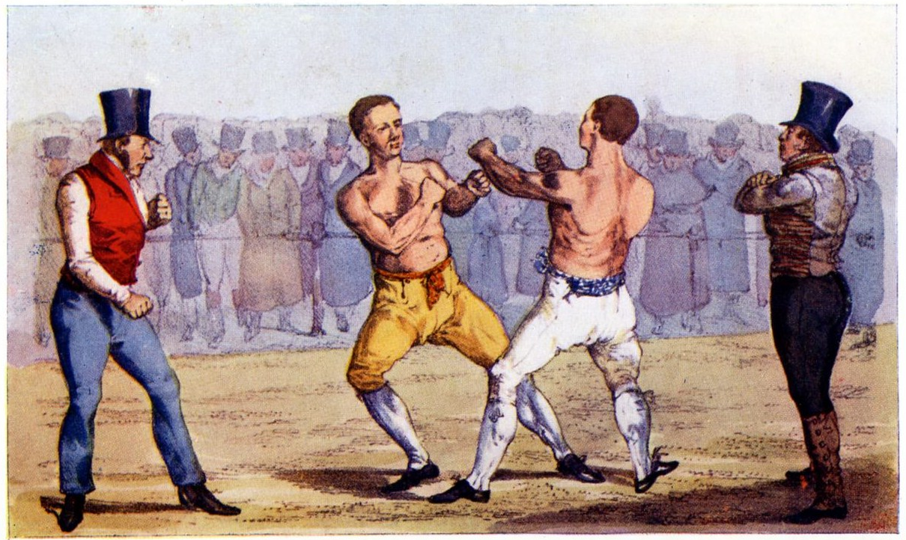
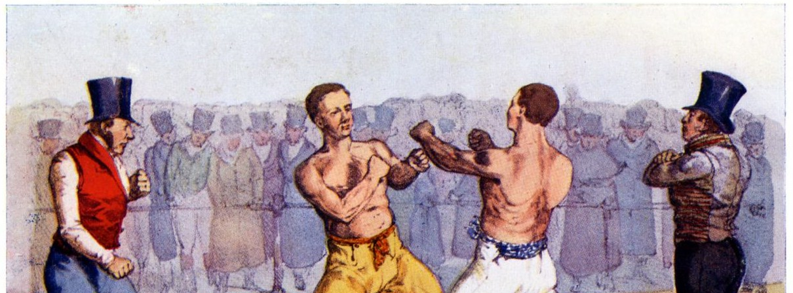

The Statute of the International Court of Justice (ICJ)
Article 38
The Court, whose function is to decide in accordance with international law such disputes as are submitted to it, shall apply:
international conventions, whether general or particular, establishing rules expressly recognized by the contesting states;
international custom, as evidence of a general practice accepted as law;
the general principles of law recognized by civilized nations;
subject to the provisions of Article 59, judicial decisions and the teachings of the most highly qualified publicists of the various nations, as subsidiary means for the determination of rules of law.
Do international institutions matter?

Do international institutions matter?
Do international institutions matter?

“Institutions are the rules of the game in a society or, more formally, are the humanly devised constraints that shape human interaction” (North 1990).
North (1990)
“Institutions are the rules of the game in a society or, more formally, are the humanly devised constraints that shape human interaction.”
Mearsheimer (1994)
“I define institutions as a set of rules that stipulate the ways in which states should cooperate and compete with each other. They prescribe acceptable forms of state behavior, and proscribe unacceptable kinds of behavior. These rules are negotiated by states, and according to many prominent theorists, they entail the mutual acceptance of higher norms, which are ‘standards of behavior defined in terms of rights and obligations.’ These rules are typically formalized in international agreements, and are usually embodied in organizations with their own personnel and budgets. Although rules are usually incorporated into a formal international organization, it is not the organization per se that compels states to obey the rules. Institutions are not a form of world government. States themselves must choose to obey the rules they created. Institutions, in short, call for the ‘decentralized cooperation of individual sovereign states, without any effective mechanism of command’” (8-9).
North (1990)
“Institutions are the rules of the game in a society or, more formally, are the humanly devised constraints that shape human interaction.”
Mearsheimer (1994)
“I define institutions as a set of rules that stipulate the ways in which states should cooperate and compete with each other. They prescribe acceptable forms of state behavior, and proscribe unacceptable kinds of behavior. These rules are negotiated by states, and according to many prominent theorists, they entail the mutual acceptance of higher norms, which are ’standards of behavior defined in terms of rights and obligations.’ These rules are typically formalized in international agreements, and are usually embodied in organizations with their own personnel and budgets. Although rules are usually incorporated into a formal international organization, it is not the organization per se that compels states to obey the rules. Institutions are not a form of world government. States themselves must choose to obey the rules they created. Institutions, in short, call for the ‘decentralized cooperation of individual sovereign states, without any effective mechanism of command’” (8-9).
North (1990)
“Institutions are the rules of the game in a society or, more formally, are the humanly devised constraints that shape human interaction.”
Mearsheimer (1994)
“I define institutions as a set of rules that stipulate the ways in which states should cooperate and compete with each other. They prescribe acceptable forms of state behavior, and proscribe unacceptable kinds of behavior. These rules are negotiated by states, and according to many prominent theorists, they entail the mutual acceptance of higher norms, which are ’standards of behavior defined in terms of rights and obligations.’ These rules are typically formalized in international agreements, and are usually embodied in organizations with their own personnel and budgets. Although rules are usually incorporated into a formal international organization, it is not the organization per se that compels states to obey the rules. Institutions are not a form of world government. States themselves must choose to obey the rules they created. Institutions, in short, call for the ’decentralized cooperation of individual sovereign states, without any effective mechanism of command’” (8-9).
The False Promise of International Institutions (Mearsheimer 1994)
?
?
?
…
Therefore, international institutions are only an intervening variable in world politics (“have minimal influence on state behavior”)
The False Promise of International Institutions (Mearsheimer 1994)
In an anarchic and highly uncertain system, states must strategically focus on their own offensive capacity to survive
International cooperation is risky for these states because of relative gains and worries about cheating
International institutions can be used by powerful states to maintain or increase their power
When the balance of power shifts, the institutions should change to better reflect the interests of the newly powerful
Therefore, international institutions are only an intervening variable in world politics (“have minimal influence on state behavior”)
The Statute of the International Court of Justice (ICJ)
Article 38
The Court, whose function is to decide in accordance with international law such disputes as are submitted to it, shall apply:
international conventions, whether general or particular, establishing rules expressly recognized by the contesting states;
international custom, as evidence of a general practice accepted as law;
the general principles of law recognized by civilized nations;
subject to the provisions of Article 59, judicial decisions and the teachings of the most highly qualified publicists of the various nations, as subsidiary means for the determination of rules of law.
“International law is that law that the wicked do not obey and the righteous do not enforce” (Eban 1957).
“International law is to law what professional wrestling is to wrestling” (Stephen Budiansky).
“…almost all nations observe almost all principles of international law and [almost] all of their obligations almost all the time” (Henkin 1979).